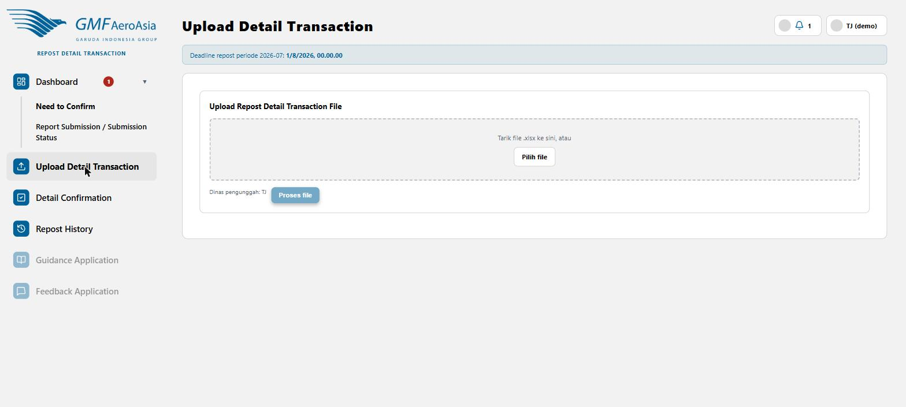

Upload file Excel (Format CBO)
rdt/repost

- Tarik (drag) file .xlsx ke kotak dropzone, atau klik Pilih file.
- Field "Dinas pengunggah" otomatis terisi sesuai dinas akun Anda.
- Klik Proses file — sistem akan membaca isi file dan menampilkan preview baris per baris beserta status masing-masing.
| Status Transaksi | Artinya |
|---|
| Pending | Menunggu keputusan dinas target (Confirm/Reject) |
| Butuh Investigasi (Ask TA) | Dinas target tidak jelas dari data Excel — TAB yang menentukan tujuannya |
Penting: sistem membaca kolom Recipient di Excel untuk menentukan dinas target tiap baris secara otomatis. Kalau nilainya tidak dikenali sistem, baris itu akan berstatus Butuh Investigasi dan diteruskan ke TAB. Kalau kolom nominal (In PCLC) tidak terbaca sebagai angka, baris tersebut otomatis ditandai tidak valid dan tidak akan diproses lebih lanjut walau kondisi lain terpenuhi.